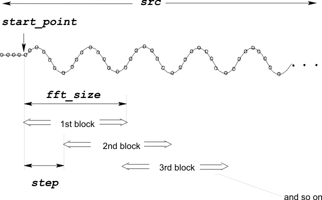

DSP_BLOCK_FFT
This API multiplies specified blocks of data within a specified array by a window function, then computes each block's spectrum by performing an FFT.
This API is defined in the header file /opt/hp93000/soc/prod_com/include/MAPI/libdsp.h.
Syntax
DSP_BLOCK_FFT(ARRAY_I& src,ARRAY_COMPLEX& result, INT start_point, INT step, INT fft_size, INT block_num, INT window); DSP_BLOCK_FFT(INT *src, COMPLEX *result, INT start_point, INT step, INT fft_size, INT block_num, INT window); DSP_BLOCK_FFT(ARRAY_D& src,ARRAY_COMPLEX& result, INT start_point, INT step, INT fft_size, INT block_num, INT window); DSP_BLOCK_FFT(DOUBLE *src, COMPLEX *result, INT start_point, INT step, INT fft_size, INT block_num, INT window);
I/O |
Parameter |
Description / Range |
|---|---|---|
I |
|
Source array |
O |
|
Computed results block_num × fft_size / 2 ≤ (size of result array) |
I |
start_point |
Start point of the first block to be processed in source array 0 ≤start_point |
I |
step |
Space between start points of blocks = (start subscript of k-th block) - (start subscript of (k - 1)-th block) |
I |
fft_size |
Number of elements per block 8 ≤fft_size≤ 16384 fft_size can be any integer in the above range. In the case that fft_size is not power of two, the Xpress data mode must be enabled in order to process the elements. . |
I |
block_num |
Number of blocks in source array Blocks can overlap each other 1 ≤block_num start_point + (block_num - 1) × step + fft_size≤ 2097152 |
I |
window |
Window RECT: Rectangular window (no window) HANNING: Hanning window HAMMING: Hamming window FLAT_TOP: Flat-top window FBLACKMAN: Blackman window See Window functions. |
Important points
- The
DSP_BLOCK_FFTAPI multiplies the specified blocks of data withinsrcby the specifiedwindow, then transforms the data, and returns the results toresult. The data is transformed by performing Fourier transformation calculus as shown in DSP_FFT. - The results are stored in
resultin sequential order as follows:For the 1st block
[0].real: DC component
[0].imag: Zero
[1].real: Cosine component of frequency bin 1
[1].imag: Sine component of frequency bin 1
. .
. .
[N/2-1].real: Cosine component of frequency bin (N/2-1)
[N/2-1].imag: Sine component of frequency bin (N/2-1)
N is
fft_size.For the 2nd block
[N/2].real: DC component
[N/2].imag: Zero
[N/2+1].real: Cosine component of frequency bin 1
[N/2+1].imag: Sine component of frequency bin 1
. .
. .
[N-1].real: Cosine component of frequency bin (N/2-1)
[N-1].imag: Sine component of frequency bin (N/2-1)
N is
fft_size.
For the M-th block
[(M-1)×N/2].real: DC component
[(M-1)×N/2].imag: Zero
[(M-1)×N/2+1].real:Cosine component of frequency bin 1
[(M-1)×N/2+1].imag:Sine component of frequency bin 1
. .
. .
[M×N/2-1].real: Cosine component of frequency bin (N/2-1)
[M×N/2-1].imag: Sine component of frequency bin (N/2-1)
N is fft_size, and M is block_num.
- The following figure shows an example of
DSP_BLOCK_FFT.
Example
ARRAY_I time_array; ARRAY_COMPLEX array2; . . DSP_BLOCK_FFT(time_array, array2, 64, 56, 128, 3, RECT);
This
example ignores the first 64 elements of the array time_array, then builds 3
overlapping blocks out of the next 240 elements. Each of these blocks contains 128 elements. The
first block starts with element 64 of time_array and ends with element 191; the
second block starts with element 120 (64+56) and ends with element 247, and so on. Now the FFT
is applied to these 384 (128×3) elements and the cosine and sine frequency components are
returned to the result array array2 in the following way:
For the 1st block
[0].real: |
DC component |
[0].imag: |
Zero |
[1].real: |
Cosine component of frequency bin 1 |
[1].imag: |
Sine component of frequency bin 1 |
. |
. |
. |
. |
[63].real: |
Cosine component of frequency bin 63 |
[63].imag: |
Sine component of frequency bin 63 |
For the 2nd block
[64].real: |
DC component |
[64].imag: |
Zero |
[65].real: |
Cosine component of frequency bin 1 |
[65].imag: |
Sine component of frequency bin 1 |
. |
. |
. |
. |
[127].real: |
Cosine component of frequency bin 63 |
[127].imag: |
Sine component of frequency bin 63 |
For the 3rd block
[128].real: |
DC component |
[128].imag: |
Zero |
[129].real: |
Cosine component of frequency bin 1 |
[129].imag: |
Sine component of frequency bin 1 |
. |
. |
. |
. |
[191].real: |
Cosine component of frequency bin 63 |
[191].imag: |
Sine component of frequency bin 63 |
Functional changes
- Introduced before SmarTest 6.3.2
- SmarTest 6.5.2: The fft_size parameter is not restricted to the power of two.